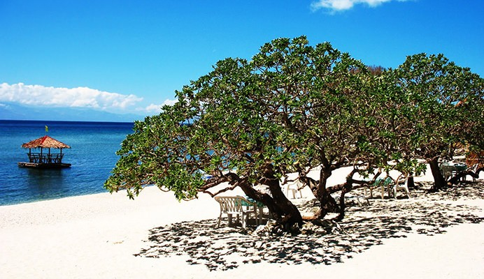
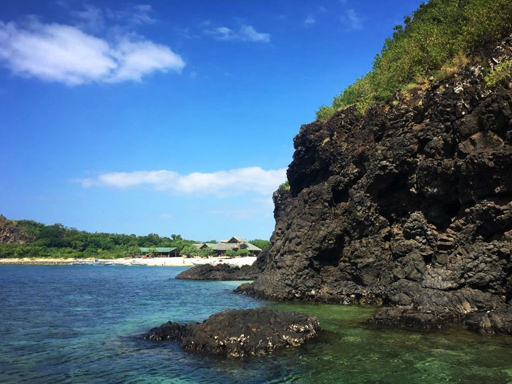
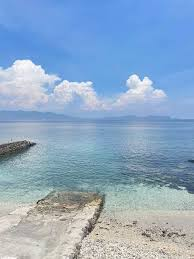

🤿 Snorkeling in Mabini
Explore vibrant coral reefs and tropical marine life in crystal-clear, shallow waters—no certification needed. Perfect for families, beginners, and all ages.
What is Snorkeling?
Snorkeling lets you observe underwater ecosystems from the surface using only a mask, snorkel, and fins. It's the perfect gateway to marine exploration—accessible, safe, and incredibly rewarding.
Why Mabini?
Mabini boasts pristine, shallow coral reefs with colorful fish, anemones, and sea urchins. The calm, warm waters and abundance of marine biodiversity make it an ideal snorkeling destination.
Best For
Families, beginners, non-certified explorers, photographers, and anyone seeking a safe, accessible way to connect with marine nature.
Top Snorkeling Spots
Family-friendly, shallow reef areas with abundant colorful fish and coral.

Anilao House Reef
This is the easiest snorkeling area because you can enter directly from the shore or resorts.

Eagle Point
A popular snorkeling spot near resorts with rich coral gardens and diverse marine life.

Sepoc Beach
A white-sand beach with clear water and coral reefs. Great for snorkeling with lots of fish and underwater crevices to explore.

Cemetery Beach
Known for its rich marine biodiversity and clear waters. Snorkelers can see corals, reef fish, and different sea creatures close to the surface.

San Teodoro Coast
A quieter snorkeling area with healthy coral gardens and fewer crowds. Good visibility and lots of small marine species make it ideal for relaxed snorkeling.
Your Snorkeling Journey
What to expect on a typical snorkeling day trip.
Meet at Departure Point
Gather at the beach or resort. Guides provide equipment check, size adjustment, and safety briefing. Learn mask/snorkel fit and emergency signals.
Boat Ride to Reef
Scenic 15–30 minute journey to snorkeling site. Guides point out landmarks and share marine facts during transit.
First Snorkel Session
Enter calm, shallow water. Guide stays close for support. Observe corals, fish, and sea life. Duration: 45–60 minutes with breaks.
Lunch & Rest
Return to boat or beach. Enjoy fresh snacks, hydrate, and rest in shade. Perfect time for questions and photo sharing.
Second Snorkel Session
Return to reef or explore another spot. More fish activity, deeper reef sections, or night snorkeling (if available).
Return & Debrief
Head back to shore. Rinse equipment, change clothes, and discuss highlights with your guide. Photos available for sharing.
Essential Snorkeling Tips
- Always wear a life vest — required for safety, especially in deeper areas or currents.
- Apply reef-safe sunscreen — protect your skin and the coral ecosystem.
- Respect marine life — observe from a distance; do not touch corals or chase fish.
- Watch for currents — stay close to guide; use a buddy system with your partner.
- Never stand on coral — use soft steps and watch your fins to avoid damage.
- Check equipment before entry — ensure mask seal, snorkel flow, and fin comfort.
- Bring fresh water & snacks — dehydration is common; stay hydrated throughout the day.
- Start in shallow water — build confidence before venturing deeper or into currents.
Ready to Explore the Reefs?
Book your snorkeling adventure in Mabini today. Perfect for families, groups, and solo travelers.
Find a Snorkeling Guide